RAZON 1
Tus ojos
Tus ojos es una de las razones por las que me gustas, unos ojos que fueron capaces de mirarme incluso cuando ni yo queria verme,
unos ojos que me hicieron darme cuenta que si habia alguien en este mundo que me podia ver con el amor que tu me miras dia a dia,
un amor incondicional y
Tan transparente como aguas cristalinas.

RAZON 2
Tus sonrisas
Hoy en dia para mi es dificil no mencionar a tu sonrisa como una de las razones por las que mi corazon palpita,
una sonrisa de las mas puras que alguien puede entregar, una sonrisa que ilumina como la luz del sol, una sonrisa
por la cual lucho y por la cual quiero mantener, una sonrisa perfecta que siempre me encantara.
No dejes que esa sonrisa se difumine nunca. <3
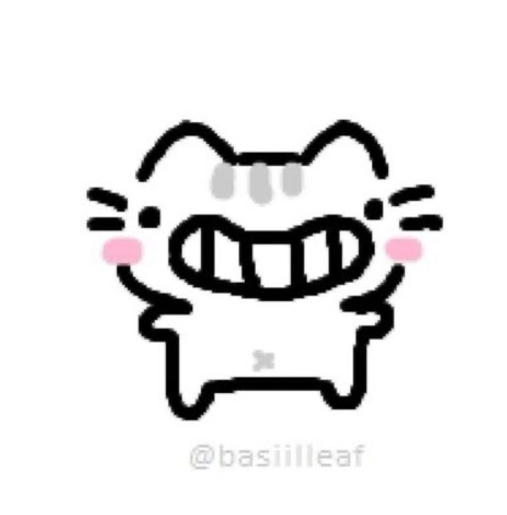
RAZON 3
Tu risas
Tu risa que es como un alivio a mi alma, una razon importante para mi, verte reir hace que todo
se sienta mas liviano, una risa que disfruto con cada carcajada que das, una risa contagiosa que haria que hasta el
hombre mas serio se ria, una risa que es agrdable escuchar y es
Una de las tantas razones que me cautivaron de ti
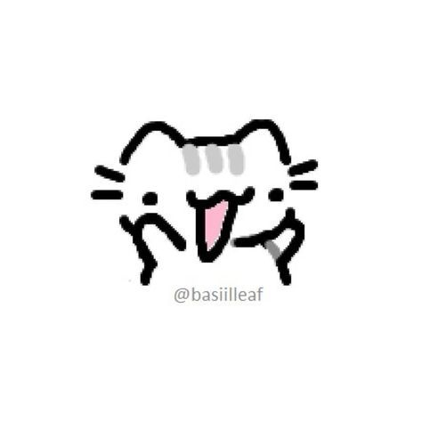
RAZON 4
Tus chistes
Tus chistes ocasionales, unos chistes que quitan la amargura que quedaba guardada en mi corazon, unos chistes que son
aveces muy malos y otras veces hacen que me ria a carcajadas, enamoraste a mi corazon con tus chistes sean buenos o malos,
unos chistes que realmente
Conquistaron mi corazon.
RAZON 5
Tus carinos
Tus cariños que me hacen volver a la niñez, cariños que me trasmiten amor y cariño, cariños que me hacen dormir como si fuera un bebe
, tus cariños deben ser la razon por la cual yo viva y por la cual todos mis problemas desaparecen, tus cariños realmente me vuelven a revivir
y me hacen sentir
que todo estara bien.
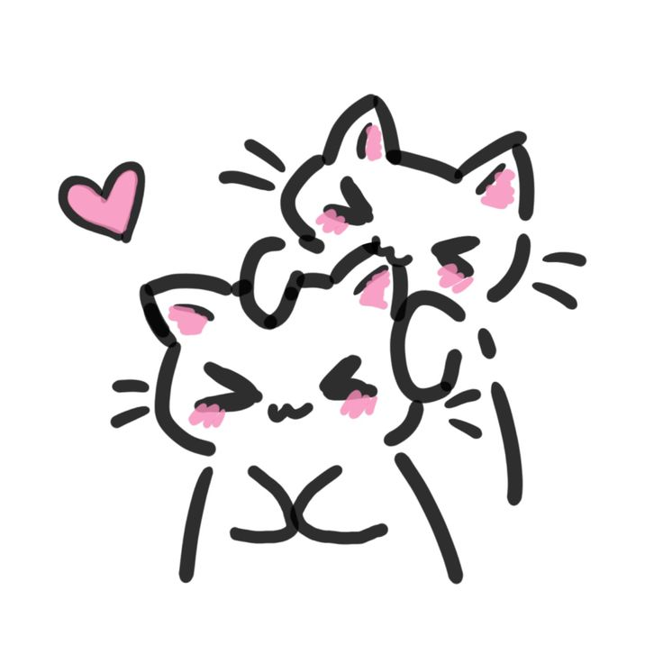
RAZON 6
Tus manos
Tus manos de bebe, unas manos que me sostienen cuando no quiero continuar, manitos que me hacen caminar pasito a pasito,
incluso si me canse de caminar, una mano que se extendio a mi cuando nadie me miraba, unas manos que me salvaron de caer al abismo infinito
del cual no podia escapar hace años
Unas manos calidas, tan calidas como tu
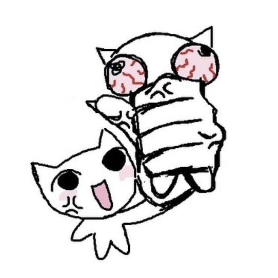
RAZON 7
Tu pelo
Tu pelo realmente me gusta, huele rico, es bonito de color, cuando esta natural me gusta mucho mas,
creo que tu pelo tambien es una razon para enamorarme ya que casi siempre que estamos acostados huelo tu pelo,
ya que al igual que tu
Es tu olor natural jiji.
.jpeg)
RAZON 8
Tu sinceridad
Eres una mujer demasiado sincera, eso me gusta mucho de ti ya que siempre puedo confiar en tus palabras sin nisiquiera dudarlo,
gracias a tu sinceridad me entregas una confianza enorme con la cual sentirme siempre seguro, tus palabras no mienten gracias a eso y me hace sentir
Extremadamente bien, gracias por ser sincera mi amor.
.jpeg)
RAZON 9
Tu amabilidad
Tu amabilidad es destacable de ti, eres una persona extremadamente amable, de verdad que nunca habia conocido a nadie tan amable como tu.
me gusta amabilidad porque yo aprendo de ella siempre y trato de ser tambien igual de amable, eso realmente me gusta.
Que me enseñes valores de verdad me gusta
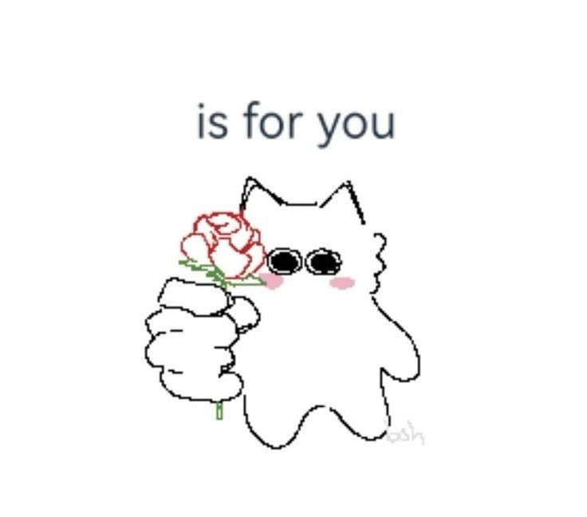
RAZON 10
Tu fidelidad
Eres nuy fiel asi que es necesario destacar esta como una de las razones, ya que, obviamente me gusta que seas tan fiel conmigo
como yo lo soy contigo, ya que asi lograremos muchas cosas juntos, realmente no creo que hay que detallar mas esta razon.
TSEME FIEL NOMAS
 • รูปและวิดีโอ Instagram.jpeg)
RAZON 11
Tus mañas
Derrepente si eres muy mañosa y eso me produce risa, ya que eres como una bebe amurrada que le deben hacer lo que ella pide o si no
hace maña, a mi no me molesta, me gusta, asi que si, destaco tus mañas pq tmb me gustan asi que siii
ME GUSTA QUE SEAS UNA BEBE MAÑOSAAAA

RAZON 12
Tus berrinches
AL igual que tus mañas, tus berrinches son realmente buenos, ya que consigues al final lo que quieres por hacerlos (pq yo lo cumplo)
y bueno amor, como en tus mañas, tampoco me molesta, mas bien me gusta consentirte para que dejes de hacer berrinches, mi bebe berrinchuda,
aun asi
te amo

RAZON 13
Tu sentido del humor
Osea, al igual que yo te ries por todo asi que si me gusta tu sentido de humor, ya que los dos tenemos un sentido del humor super rasca,
como el video en la barberiaaaaaa bonito y bello, realmente son cosas que me hacen reir y las cuales podemos compartir mutuamente,
Lo mutuo me gusta jiji
EN LA BARBERIAAAAAAA

RAZON 14
Tu transparencia
Quiero decirte que admiro mucho cómo eres tan transparente conmigo. Me hace sentir más cercano a ti y me ayuda a confiar más en nuestra relación.
Tambien me gusta que esa transparencia me muestre una honestidad, autenticidad, claridad, coherencia, responsabilidad, apertura y sobre todo confiaza.
Ya que contigo siempre espero que estes dispuesta a escuchar y comunicarse forma clara conmigo.
Ser autentico es mostrarse como realmente eres, y tu lo eres conmigo
RAZON 15
Tu sentido de la musica
Gracias a tu estilo de musica nos pudimos acercar mas, hoy en dia tu escuchas la musica que yo escucho y yo lo mismo.
incluso escuchamos lo mismo, eso es tan bonito ya que podemos compartir nuestros gustos de una forma especial,
dedicandonos canciones, yendonos escuchando musica en la micro, etc.
Escuchemos musica siempre
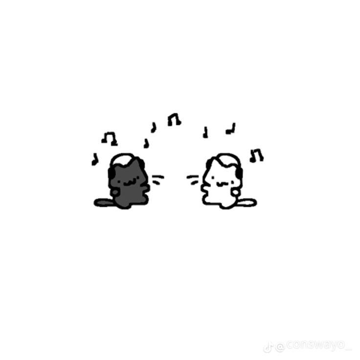
RAZON 16
Tu sentido de la moda
Me gusta como te vistes aunque tu me digas que a ti no te gusta, creo que tienes un muy buen sentido de la moda, uno genial.
Tambien me gusta como me tratas de vestir ya que siempre encuentras que me puede quedar bien y realmente me queda bien.
Eres increible
RAZON 17
Tus habilidades culinarias
Esta de mas el explicar por que?, tu sabes perfectamente que pienso de eso pq realmente cocinas bien, lo que cocinas siempre me gusta,
incluso si no es algo que como normalmente, realmente la haces tan bien que me la puedo comer sin tapujos, sin hacer caras de asco ni nada,
realmente, increible.
cociname galletitas
RAZON 18
Tus gustos culinarios
Me gustan tus gustos culiniaros por que me recomiendas cosas ricas a mi y al mismo tiempo comemos cosas ricas juntos,
asi que si, me gustan tus gustos culinarios pq asi comemos ricos los dos y podemos compartir muchos momentos bonitos
juntitos.
RAZON 19
Tu ternura
Eres muy tierna, cada gesto que haces es tierno, cada accion que haces es tierna, cada sonrisa que das es tierna,
cada risa que das es tierna, cada enojo tuyo es tierno, cuando comes te ves tierna, cuando duermtes te ves tierna,
cuando caminas te ves tierna, cuando bostezas te ves tierna, cuando existes eres tiernaaaaaaaaaaaaaaaa.
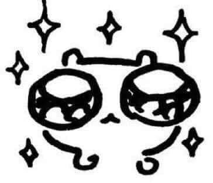
RAZON 20
Tus gestos
Tus gestos demuestran muchas de tus palabras, practicamente tus gestos hablan por si solos,
cuando haces caras graciosas o cuando sonries de una forma tan preciosa que me encanta muchisimo,
tus gestos es una razon mas que clara para ponerla, creeme.
RAZON 21
Como me proteges
Tus ojos es una de las razones por las que me gustas, unos ojos que fueron capaces de mirarme incluso cuando ni yo queria verme,
unos ojos que me hicieron darme cuenta que si habia alguien en este mundo que me podia ver con el amor que tu me miras dia a dia,
un amor incondicional y
Tan transparente como aguas cristalinas.
RAZON 22
Tus logros
Tus logros me hacen sentir orgulloso, me da gusto verte lograr tus cosas ya que creo que es muy importante ayudarte a
encontrar lo que quieres hacer y ver como lo logras me llena el corazon de gusto, me hace feliz verte cumplir tus logros
y estar a tu lado justito ahi cerquita mirando como logras todo lo que te propones y ser el primero en felicitarte jiji.
RAZON 23
Tus mensajes
Tus mensajes de buenos dias, tus mensajes diciendome como estoy, todos esos mensajes que han logrado que nuestra relacion se mantenga tan bien
como el primer dia, creo que la comunicacion que tenemos es grandiosa y los mensajes son un gran medio por el cual podemos seguir conectados apesar
de la distancia, aparte me hace muy feliz hablar contigo incluso si estoy o estas ocupada, me gusta todo de ti.
RAZON 24
Tus risas
Tu risa es bonita, creo que encaja muy bien con tu carita, siempre que veo videos donde te ries me da risa o sonrio bobamente.
Me gusta hacerte reir pq creo que asi te enamoro mas y me gusta enamorarte mas pq asi no te pierdo ya que no te quiero perder
nunca de los nuca mi amor.
RAZON 25
Tus enseñanzas
Me enseñas bastante, incluso mas de lo que puedo aprender solo, tu si que eres inteligente aunque tu digas que no, pq siempre
dices que no y eso es falsisimo ya que me enseñas sobre cocina o sobre cosas de cultura general normales, nuevas palabras, como hacer algo,
realmente eres increiblemente inteligente aunque digas que no y me enseñas caleta (incluso a amar mas bonito)

RAZON 26
Tu paciencia
Me gusta tu paciencia, ya que debes tener mucha conmigo pq realmente soy alguien dificl de entender y creo que hasta yo mismo lo se,
asi que realmente amo tu paciencia y la agradezco pq gracias a eso trato de mejorar aunque me demore un poco mas realmente mejoro para no
gastar tanto esa paciencia tan bonita que tienes.
RAZON 27
Tu perseverancia
Eres una mujer perseverante, realmente me gustas, porque creo que en tus peores momentos supiste perseverar y salir de esas situaciones,
incluso si no perseveraras contigo mismo realmente te hubieras rendido a la primera cosa mala y no fue asi, perseveras con tu vida,
perseveras conmigo, perseveras por llevarte bien con tu mami, de verdad eres un ejemplo a seguir.
RAZON 28
Tu olor
No tengo idea que perfume usaras pero realmente siempre hueles muy rico, de solo recordar como hueles me llega el olor a mi nariz,
todavia recuerdo el olor cuando te conoci tambien asi que imaginate, de verdad soy adicto a tu olor que realmente es muy bueno,
hueles realmente rico.
RAZON 29
Tu forma de compartir
Compartes bastante conmigo, eso me gusta, porque al compartir creo que eres una persona capaz de dar incluso de lo tuyo para que otros coman.
igualmente confirmo esto cuando le compartes cosas a los gatitos o a cualquier animal en general. me parece muy bonito que seas asi pq al final
eres una persona que piensa bastante en los demas y eso es bonito.
RAZON 30
Tu anor a los gatos
ME GUSTA MUCHO QUE AMES TANTO A LOS GATITOS PQ TE VES MUY LINDA, de verdad no entiendo como hay alguien que ama tanto a los gatitos,
cuando ves uno en la calle la carita que pones me da mil años de vida pq para mi tu eres mi gatito y por eso me gusta hacerte cariño de una forma bonita
tratando de que sea de la misma forma bonita que le das cariños tu a otros gatitos.
RAZON 31
Tus metas
Tus metas son realmente importantes para mi y una razon importante tambien, ya que me gusta escuchar tus metas de forma detallada,
me gusta que me hagas participe de ellas, es una razon bastante importante para mi realmente, ya que siento que tus metas son importantes
para nuestras relacion y gran de la mayoria se complementan, me gusta me gustaaaa.
RAZON 32
Tus penas
Tus penas aunque no sean buenas son una razon para destacar importante, ya que esas penas desapareceran,
te lo prometo, hare que cada una de tus penitas se sientan como un beso y es una razon mas que suficiente para amarte,
ya que hare todos los dias lo posible para que desaparezcan, lo prometo.
RAZON 33
Tu forma de cuidarme
Me cuidas bastante, ya que realmente me cuidas, no es como que me enferme y tu digas recuperate, no, tu tratas de que vaya al doctor,
si me hago una herida tu tratas de decirme que vaya al doctor, y asi sucesivamente y creo que si vivimos juntos tu seras la primera en
darme amor y medicamentos para que mejore. Creo que es una razon mas que suficiente para poner jiji.
RAZON 34
Tu forma de amarme
Esta de mas detallar este punto, ya que todas las razones es como yo percibo tu forma de amarme,
me gusta mucho poder recibir el mismo amor que doy e incluso mas, ya que eres una persona realmente amorosa conmigo,
me gusta, me gusta mucho, me gustas mucho!
RAZON 35
Tu forma de ayudarme
Todo el tiempo encuentras soluciones creativas para ayudarme con problemas, sea de cualquier tipo ya que realmente te das el tiempo,
de pensar sobre el problema y entregarme soluciones que realmente me ayudan mucho, me ayudas a ser mejor mentalmente, en mis cosas,
en mis clases, en descubrir como hacer algo, en muchas cosas, de verdad eres fascinante.
RAZON 36
Por ser mi tipo de mujer
En general antes de concoerte no tenia un tipo de mujer, pero al conocerte de verdad me di cuenta que si tuviera que describir como me gusta alguien
describiria tu cuerpo, tu personalidad, tus gustos, de verdad.
My kind of woman.
RAZON 37
Por ser mi lugar seguro
Siempre te he dicho que eres mi lugar seguro, nunca habia sentido esa sensacion con nadie, realmente cuando te conoci supe que era aqui contigo,
que la paz que me das, que al principio asustaste a todos mis demonios, demonios que no me dejaban dormir, demonios que me perturbaban todos los dias, tu los eliminaste
me hiciste volver a dormir bien, me hiciste volver a sentirme tranquilo
gracias por ser mi lugar seguro, en el cual puedo descansar
RAZON 38
Tus palabras
Tus palabras en general hacia mi persona siempre vienen llenas de amor, palabras que con cada letra hacen que de verdad me haga adicto a tu voz,
palabras que me enseñan, palabras que me aman, palabras que me retan, palabras que se preocupan por mi, palabras desde el corazon y palabras que
me enamoraron
como nunca nadie lo ha hecho
RAZON 39
Tus modales
Realmente me gusta mucho tus modales, creo que eres una persona super buena en cuanto a modales, siempre lo noto al estar juntos
o cuando salimos, ya que casi siempre sueles tener respeto y mostrar buenos modales hacia las demas personas y eso me parece de una persona
realmente buena, de verdad eres increible.
RAZON 40
Tus celos
Eres mi bebe celosa, me encantan tus celos pq te ves como un gatito pequeñito enojado o como ese perrito chiquito
que se da vuelta luego que lo miran, aunque derrepente tengas celos bobitos aun asi me gustan pq siento que de verdad
te importo y tus celos me lo demuestran aunque sean por bobadas nada que ver
Aun asi te amo mi celosita
RAZON 41
Tus besos
Tus besos que saben a miel, a dulce, a frambuesa, a donas, a pastelitos,
a monster, a pinguinito, a mankeke, a rayita, a lo mas dulce del mundo. Unos besos que me vuelven loco,
besos tan suavecitos y llenos de pasion a la vez
Sigamos besandonos
RAZON 42
Tus suspiros
Tus suspiros que le dan tranquilidad a mi alma, unos suspiros que me enamoran como cada
cosa de ti, unos suspiros que pueden ser de mañana o de amor, de todas formas
Me gustan tus suspiros, me gustas tu
RAZON 43
Tu sensibilidad
Tu sensibilidad realmente me conmueve y me inspira a ser mejor novio,
ya que sinceramente, creo que al ser muy brutito debo tener mas cuidado con mi princesita.
Por ende cuando lloras mi corazoncito quiere cuidarte, aunque sea por cosas pequeñas,
adoro tu sensibilidad ya que me gusta sentir que eres una persona que se pone en el lugar del otro y llora por eso
Y no esta mal, te hace unica y especial para mi
RAZON 44
Tus labios
Unos labios que me traen locos desde el dia uno, labios que nunca me voy a cansar de ver, labios bonitos y rosaditos,
labios que siempre voy a besar, labios que siempre acariciare
¿Tus labios? NO, mis labios SISIS, you lips my lips apocalypse
RAZON 45
Tus miedos
Mi bebe miedosa, literalmente, me genera mucha ternura verte asustada ya que pegas como brinquitos,
realmente es muy bonito. En fin, me gustan tus miedos porque se que te asustas por todo y yo realmente quiero
protegerte de todos esos miedos y sustos que tienes
Soy tu superheroe, siempre te protegere
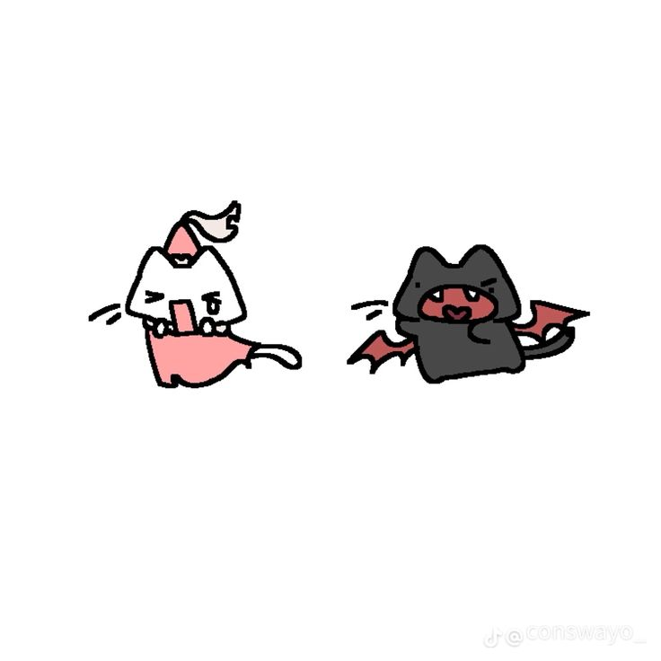
RAZON 46
Tu apane
SI, ESCRIBI APANE CON N PQ NO PUEDO PONER LA TU SABES CUAL,
pero si, eres una persona que me apana siempre y eso realmente es una razon a destacar,
porque al final tu me apanas incluso en cosas que no estoy seguro de hacer y con la seguridad que me brindas
lo intento
Si no fuera por tu apane no me arriesgaria a hacer cosas y gracias por eso
RAZON 47
Por ser la louise de mi hal
Aqui la cuestion, tu eres hal y yo louise o viceversa? Yo creo que tu eres hals porque
eres igual de dramatica que el jiji, creo que siempre que veo malcom nos veo retratados como ellos
ya que creo que nuestra relacion es identica a ellos dos, asi que si
Eres el hal de mi louis!.
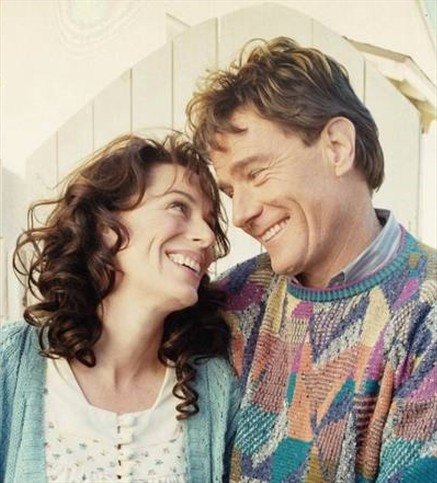
RAZON 48
Tus dibujos
Tus dibujos de verdad son increibles, tengo a mi spiderman siempre al lado de mi escritorio asi que imaginate lo mucho que lo adoro,
al punto que literalmente el cuaderno que dibujaste siempre lo tengo abierto para ver tus dibujos cada vez que paso por el lugar donde esta
dibujos que tengo en mi libreta pegados, dibujos que tengo en mi galeria guardados,
Dibujos que disfruto de tener y poder apreciar de mi pequeña artista
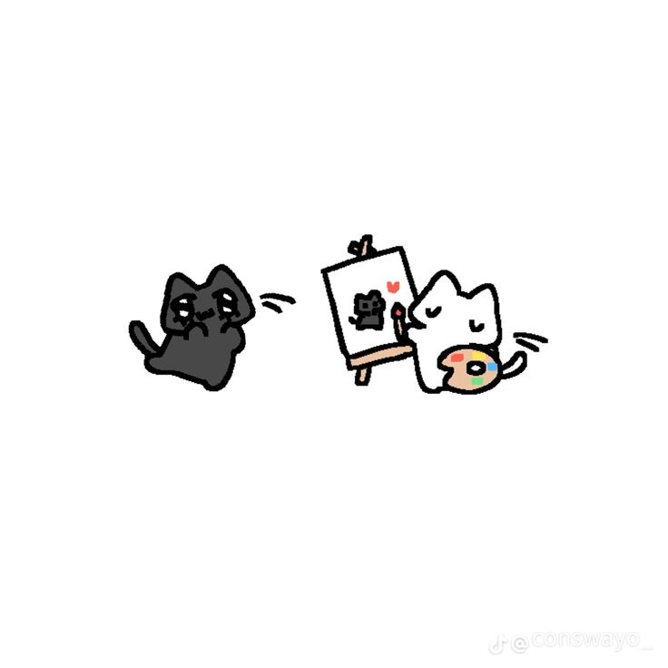
RAZON 49
Tus ataques de amor
Tus ataques de amor tan recurrentes, ataques de amor que te hacen volverte loquita mi amor
ataques de amor que disfruto mucho de recibir, ya que realmente se siente bonito sentir todo lo que me trasmites,
desde morderme hasta querer pegarte a mi mas cerca de lo que se puede
Realmente amo tus ataques de amorcito
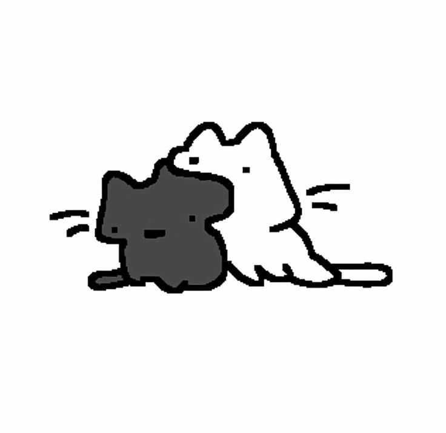
RAZON 50
Y mi razon mas importante
Por ser tu, tal cual eres, todas las demas razones son solo extractos de ti, tu eres una mujer unica, contienes todo lo que me gusta
y mas, eres perfecta tal cual y como eres, creo que mi razon mas importante para amarte es esa, porque eres tu, eso es mas que suficiente.
Te amo y siempre te voy a amar, no importa si son 50 o 60 o mas razones, siempre tendre mas de una para amarte, siempre tendre esta razon para amarte,
por ser tu, por tu existencia, una existencia preciosa que siempre agradecere a dios de poder contemplarla hoy en dia.
Te amo, MI razon de vivir.